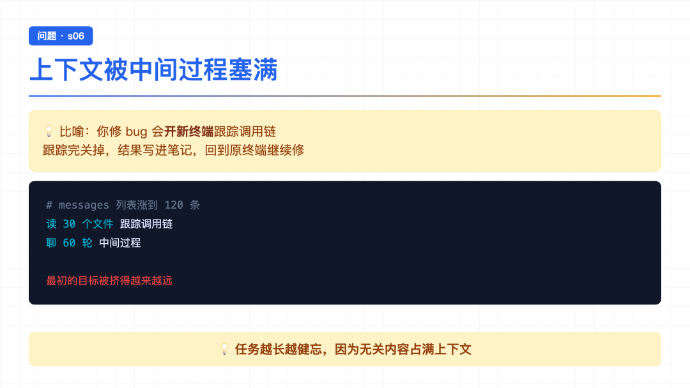
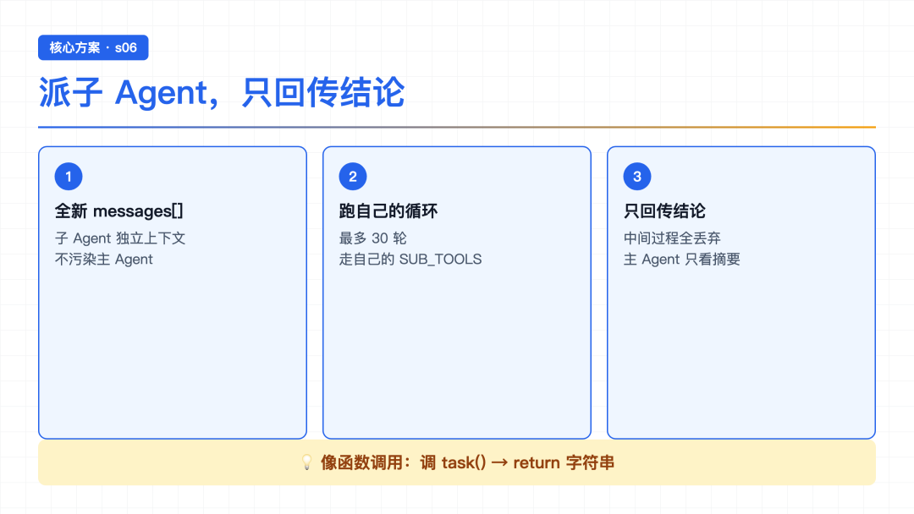
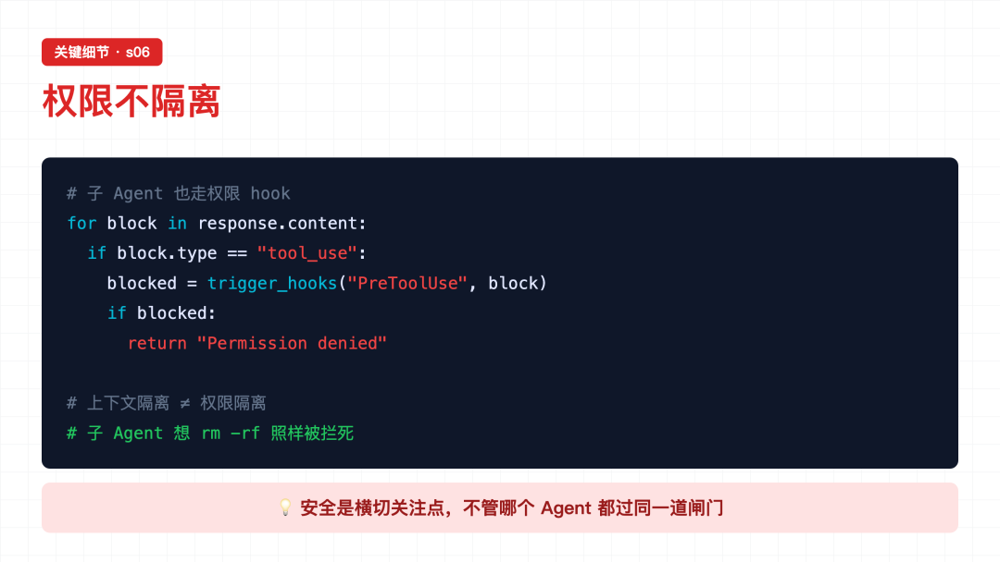
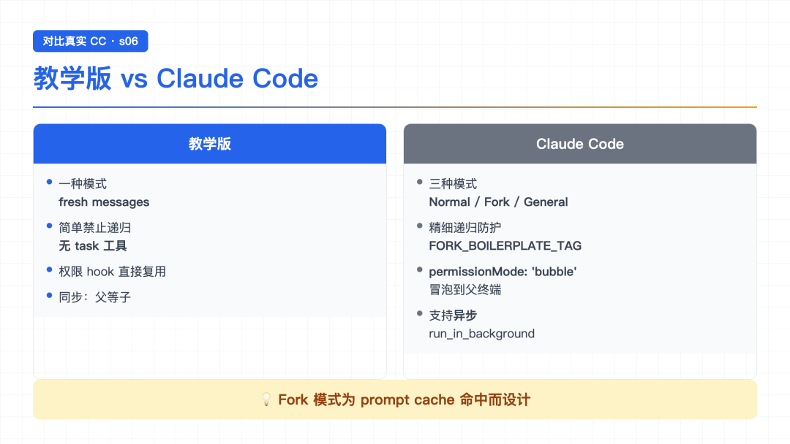

大家好，我是郑同学。周末赶紧多学学[旺柴]
上一节 s05 读到结尾，作者留了个钩子：todo_write 让 Agent 会列计划了，但任务太大怎么办？ 比如重构整个认证模块——这种任务本身就是几十个小任务的集合，光靠一个 TODO 列表根本压不住。
我当时想：列计划压不住，那就拆分呗？但怎么拆？拆了之后各部分怎么不互相干扰？
s06 给出的答案特别优雅——派一个子 Agent 去干，它有自己的干净上下文。这一节就读这个。
● ● ●

问题：上下文被塞满
作者在 README 里举了个例子，读完特别有共鸣：
Agent 在修一个 bug。它读了 30 个文件来追踪调用链，中间聊了 60 轮。messages 列表涨到 120 条，其中大部分是"追踪调用链"的中间过程，和"修 bug"这个最终目标无关。
读到这儿我突然意识到——前几节 Agent 的"健忘"问题，根源就在 messages 里堆了太多无关的中间过程。任务越长，无关内容越多，真正重要的"最初目标"被挤得越来越远。
打个比方：你在终端里修 bug，跟踪调用链的时候你会开一个新终端。跟踪完了，关掉这个终端，把结论写进笔记，回到原来的终端继续修 bug。跟踪过程的输出不污染你修 bug 的上下文。
Agent 也需要这个能力。
● ● ●

方案：派子Agent只回传结论
作者的解法是——加一个叫 task 的工具，调用它就能 spawn 一个子 Agent。
子 Agent 有三个关键特点：
task 工具，不能再 spawn 孙 Agent读完我第一反应是：这不就是函数调用吗？主 Agent 调 task(description)，子 Agent 跑一圈，return 一个字符串。主 Agent 拿到这个字符串继续干。函数调用本来就是一种"上下文隔离"——函数内部的局部变量不影响外面。Subagent 就是把这个概念搬到了 Agent 层面。
● ● ●
看下核心函数：
def spawn_subagent(description: str) -> str: """派一个子 Agent，给它全新 messages[]，只回传结论""" print(f"\n[Subagent spawned]") # 1. 全新的 messages 列表 messages = [{"role": "user", "content": description}] # 2. 子 Agent 跑自己的循环（最多 30 轮安全限制） for _ in range(30): response = client.messages.create( model=MODEL, system=SUB_SYSTEM, # 子 Agent 专用提示 messages=messages, tools=SUB_TOOLS, # 子 Agent 专用工具 max_tokens=8000, ) messages.append({"role": "assistant", "content": response.content}) # 子 Agent 说做完了，退出循环 if response.stop_reason != "tool_use": break # 执行子 Agent 的工具调用 results = [] for block in response.content: if block.type == "tool_use": # 注意：子 Agent 也走权限 hook blocked = trigger_hooks("PreToolUse", block) if blocked: results.append({... "content": str(blocked)}) continue handler = SUB_HANDLERS.get(block.name) output = handler(**block.input) results.append({... "content": output}) messages.append({"role": "user", "content": results}) # 3. 只返回最后的文本结论，中间过程全部丢弃 return extract_text(messages[-1]["content"])
逐段读：
第一段——全新 messages。子 Agent 拿到一个干净的对话列表，只有一句任务描述。它不知道主 Agent 之前聊了什么，也不需要知道——它只管完成自己被分配的那件事。
第二段——独立循环。子 Agent 跑自己的 while 循环（这里用 for _ in range(30) 做安全限制），和主 Agent 的循环结构一模一样：调 LLM、看 stop_reason、执行工具、喂回结果。区别只在 tools 和 system 提示是专用的。
第三段——只回传结论。子 Agent 跑完，extract_text 拿到最后一条 assistant message 的文本，return 出去。中间那几十轮 messages 全部丢弃，不带回主 Agent。
● ● ●
读完代码我整理了一下，作者的三个设计决策特别值得品：
第一个决策解决了"上下文污染"——子 Agent 读了多少文件、试了多少方案，主 Agent 完全不知道，也不需要知道。
第二个决策解决了"信息过载"——如果子 Agent 把 30 轮 messages 全部回传，主 Agent 的上下文照样爆掉。只回传结论，主 Agent 拿到一句摘要，继续干自己的事。
第三个决策解决了"无限递归"——如果子 Agent 也能 spawn 子 Agent，万一模型失控，派生出一万个孙 Agent，系统直接炸。简单粗暴：子 Agent 没有 task 工具，从根本上禁止递归。
● ● ●

关键细节：权限不隔离
读代码时我注意到一个细节——子 Agent 的工具调用也走 PreToolUse hook：
for block in response.content: if block.type == "tool_use": # 子 Agent 也查权限！ blocked = trigger_hooks("PreToolUse", block) if blocked: results.append({... "content": str(blocked)}) continue # ...
这个设计很关键——上下文隔离，不代表权限隔离。子 Agent 想执行 rm -rf 一样会被拦死。你不能因为派了个子 Agent 出去就绕过安全策略。
读到这儿我想起 s03 的结论：安全要靠代码强制，不能靠信任模型。s06 把这个原则贯彻到了子 Agent 身上——权限系统是横切关注点，不管哪个 Agent 干活，都过同一道闸门。
● ● ●
原理讲完了，但在跑 Demo 之前，我想把 s06 的核心代码完整贴出来，把"主 Agent → 子 Agent → 结论回传"这条链路串一遍。
完整核心就两块：子 Agent 的工具配置 + spawn_subagent 函数。
# ===== 第一块：子 Agent 的工具配置 ===== # 子 Agent 有基础工具，但没有 task（禁止递归） SUB_TOOLS = [ {"name": "bash", ...}, {"name": "read_file", ...}, {"name": "write_file", ...}, {"name": "edit_file", ...}, {"name": "glob", ...}, # 注意：没有 "task"！ ] SUB_HANDLERS = { "bash": run_bash, "read_file": run_read, "write_file": run_write, "edit_file": run_edit, "glob": run_run_glob, } # 子 Agent 专用的 system 提示 SUB_SYSTEM = ( f"You are a coding agent at {WORKDIR}. " "Complete the task you were given, then return a concise summary. " "Do not delegate further." # 明确告诉它：别再派子 Agent ) # ===== 第二块：spawn_subagent 函数 ===== def spawn_subagent(description: str) -> str: messages = [{"role": "user", "content": description}] # 全新 messages for _ in range(30): # 安全限制 response = client.messages.create( model=MODEL, system=SUB_SYSTEM, messages=messages, tools=SUB_TOOLS, max_tokens=8000, ) messages.append({"role": "assistant", "content": response.content}) if response.stop_reason != "tool_use": break results = [] for block in response.content: if block.type == "tool_use": blocked = trigger_hooks("PreToolUse", block) # 权限不隔离 if blocked: results.append({"type": "tool_result", "tool_use_id": block.id, "content": str(blocked)}) continue handler = SUB_HANDLERS.get(block.name) output = handler(**block.input) results.append({"type": "tool_result", "tool_use_id": block.id, "content": output}) messages.append({"role": "user", "content": results}) return extract_text(messages[-1]["content"]) # 只回传结论 # ===== 第三块：把 task 工具挂到主 Agent ===== TOOLS.append({ "name": "task", "description": "Launch a subagent to handle a complex subtask. Returns only the final conclusion.", "input_schema": {"type": "object", "properties": {"description": {"type": "string"}}, "required": ["description"]}, }) TOOL_HANDLERS["task"] = spawn_subagent
串一遍：
第一块——子 Agent 工具配置。子 Agent 用的是裁剪过的 SUB_TOOLS——基础工具都有，但唯独没有 task。这是"禁止递归"的物理保证。另外子 Agent 有自己的 SUB_SYSTEM 提示，明确告诉它"完成任务，不要委派"。
第二块——spawn_subagent。核心是三步：全新 messages → 跑自己的循环 → 只回传结论。注意中间这段工具执行的代码——和主 Agent 的循环几乎一模一样，但走的是 SUB_HANDLERS。权限 hook 照样触发，安全策略不因上下文隔离而跳过。
第三块——task 工具挂载。主 Agent 调 task 工具时，dispatch 到 spawn_subagent。对主 Agent 来说，这和调 bash 没区别——都是查表分发。主 Agent 不知道、也不关心子 Agent 内部跑了多少轮，它只看到一个字符串结果。
主 Agent 收到："读 agents/ 下所有文件，总结每个文件做什么" 主 Agent： → 调 task 工具：task(description="读 agents/ 下所有文件...") → 等待... 子 Agent（独立 messages）： → read_file(agents/a.py) → 看到内容 → read_file(agents/b.py) → 看到内容 → read_file(agents/c.py) → 看到内容 → 总结：a.py 干 X，b.py 干 Y，c.py 干 Z → return "a.py 干 X，b.py 干 Y，c.py 干 Z" 主 Agent： → 拿到字符串结果 → 继续自己的工作（上下文里只有这一句摘要）
主 Agent 的 messages 里只多了一条"摘要文本"，子 Agent 读的那 3 个文件内容、3 次工具调用，全部丢弃。这就是上下文隔离的威力。
● ● ●
光看代码没感觉，跑一下。给主 Agent 一个任务：
Use a subtask to find what testing framework this project uses
主 Agent 收到任务，一看——这事可以派出去，调用 task 工具：
> task [Subagent spawned]
子 Agent 开始干活（独立 messages）：
[sub] glob: **/test_*.py [sub] read_file: tests/test_utils.py [sub] read_file: conftest.py [sub] read_file: pyproject.toml
子 Agent 读了几个文件，搞清楚用的是什么测试框架。然后返回结论：
[Subagent done]
主 Agent 拿到摘要——比如一句"项目用 pytest，配置在 pyproject.toml"。然后主 Agent 回复用户：
这个项目用 pytest 作为测试框架，配置在 pyproject.toml 里。
主 Agent 的 messages 里完全不知道子 Agent 读了哪些文件。它只看到一个字符串结果。
读完这个 Demo 我最大的感受是——s06 的"拆"是物理拆。不是 TODO 列表那种"逻辑上分几步"，而是真的派一个独立 Agent，给它独立的内存、独立的对话、独立的工具循环。子 Agent 的所有中间状态，对主 Agent 不可见。
● ● ●

对比真实CC：三种模式
教学版的 subagent 已经很巧妙了，但读到"深入 CC 源码"那节，我才发现真实 CC 走得更远。不是一种模式，是三种：
教学版 Claude Code ────────── ────────────── 一种模式（fresh messages） 三种模式（Normal/Fork/General） 不管 prompt cache Fork 模式专门为共享 prompt cache 设计 简单禁止递归（无 task 工具） 精细化递归防护（FORK_BOILERPLATE_TAG） 权限 hook 直接复用 permissionMode: 'bubble'（冒泡到父终端） 同步（父等子） 支持异步（run_in_background）
几个让我印象深刻的差距：
三种执行模式。CC 实际有 Normal Subagent（全新 messages）、Fork Subagent（共享 prompt cache）、General-Purpose（兜底）。Fork 模式特别有意思——它不创建全新上下文，而是通过 buildForkedMessages() 构造 cache-friendly 前缀，让父子 Agent 的 system prompt、tools、messages 前缀字节级一致，API 端 prompt cache 直接命中，省 token 又省时间。
递归保护更精细。教学版是"子 Agent 无 task 工具"，简单粗暴。CC 用 isInForkChild() 检查对话历史里有没有 FORK_BOILERPLATE_TAG，针对不同场景有不同的放行/禁止策略—— teammate 场景下有特殊放行，不是一刀切。
权限冒泡。CC 的 Fork Agent 用 permissionMode: 'bubble'，子 Agent 的权限弹窗冒泡到父终端，用户在主终端里审批子 Agent 的操作。上下文隔离，但用户监管不隔离。
支持异步。教学版是父 Agent 死等子 Agent 跑完。CC 还支持 run_in_background: true，异步启动子 Agent，立即返回 { status: 'async_launched' }，子 Agent 跑完后再通知父 Agent。教学版把这个留到了 s13。
教学版的简化是刻意的——三种模式只讲一种（最直观的 fresh messages），省略 prompt cache 优化、省略异步、省略精细的递归防护。先把"上下文隔离"这个核心概念讲清楚，生产级的复杂性后面再展开。
● ● ●
读完 s06，我自己最大的感悟是——隔离是一种能力。
前几节的 Agent 都在同一个上下文里干活——读过的文件、试过的方案、失败的报错，全部堆在 messages 里。任务短没事，任务一长就健忘。todo_write 解决了"忘了下一步做什么"，但解决不了"上下文被中间过程塞满"。
s06 给出的答案是物理隔离——派一个子 Agent，给它独立的 messages，让它专心干一件事，干完只回传一句结论。主 Agent 的上下文始终保持干净。
几个关键点回顾：
task 工具——主 Agent 调它就能 spawn 子 Agent读到这儿回头看，s01 的 while 循环、s02 的查表分发、s03 的权限闸门、s04 的 Hooks、s05 的 todo_write——每一节都在给 Agent 加能力，但核心循环始终没动。s06 加的 task 工具也是一样——对主 Agent 来说，调 task 和调 bash 没区别，都是查表分发。架构的延续性，真的漂亮。
● ● ●
Agent 现在能拆任务了。但每个任务需要的知识不一样——改前端组件需要知道 React 规范，写 SQL 需要知道表结构。这些知识全塞进 system prompt，上下文直接爆掉。
那怎么办？能不能按需加载知识——用到的时候才注入，不用的时候不占位置？
下一节 s07 Skill Loading，就读这个——技能按需注入，不在 system prompt 里堆文档。
源码地址：https://github.com/shareAI-lab/learn-claude-code